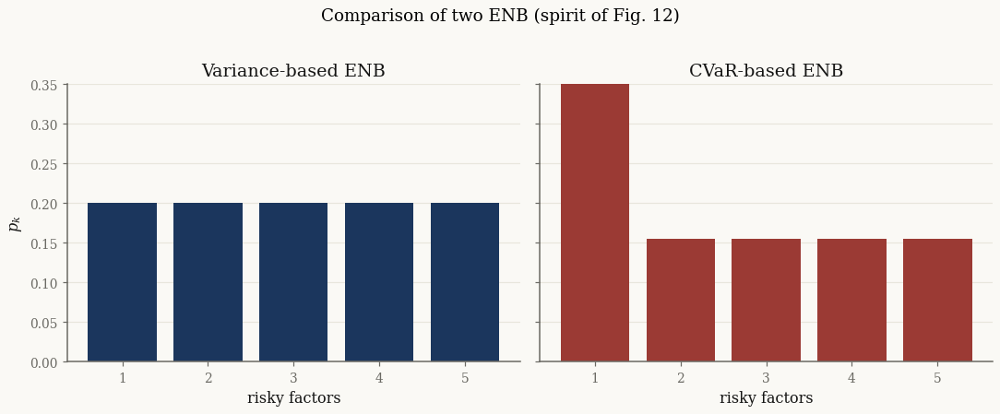
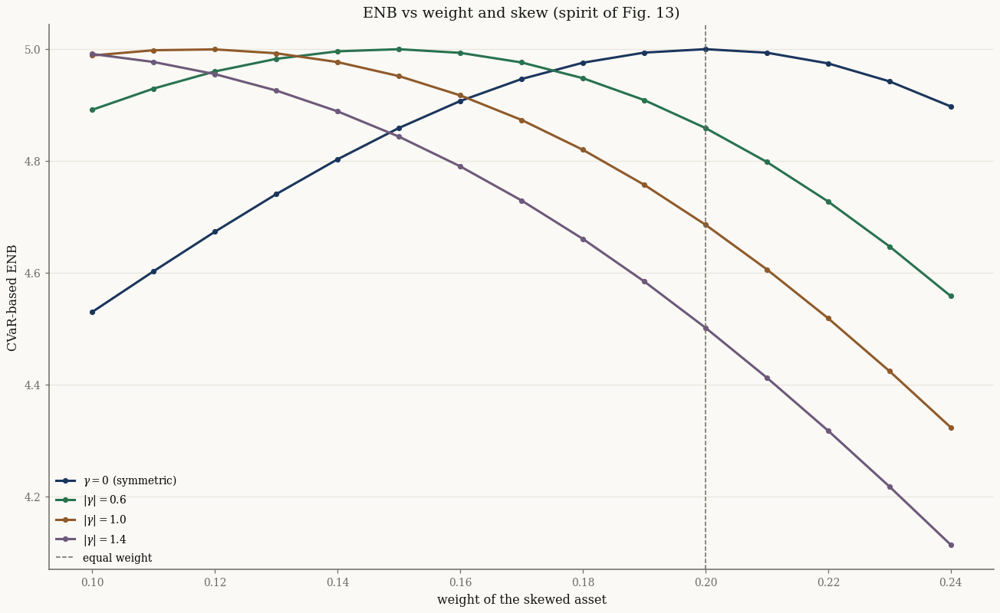
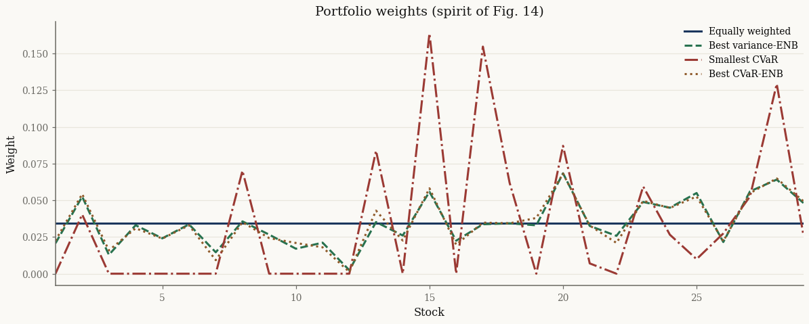

Diversification: variance ENB vs CVaR ENB#
Meucci’s effective number of bets (ENB; Meucci2010, Meucci2014) asks how many uncorrelated risk factors a portfolio is truly exposed to. The answer depends on which risk you diagonalize. Variance ENB uses \(\mathrm{Cov}[X]\); generalized ENB uses the Hessian of squared coherent risk \(\rho^2\) — here CVaR — and can see tail concentrations that a second-moment measure misses.
This page follows the spirit of Figures 12–14 and Table 15 of Shi2016: a synthetic case where variance ENB declares perfect diversification while CVaR ENB does not, then a Dow Jones study that builds four long-only portfolios (equal weight, max variance-ENB, min CVaR, max CVaR-ENB). The dissertation’s synthetic example used independent normals plus one Student-\(t\) with a sample Hessian; here the same qualitative gap appears inside the normix mixture API (shared subordinator, \(\mathrm{Cov}[X]\propto I\)). The Dow numbers use a recent panel window rather than 2005–2013.
Formal derivations: Effective Number of Bets and Minimum Torsion, Generalized Effective Number of Bets.
import jax
jax.config.update("jax_enable_x64", True)
import jax.numpy as jnp
import numpy as np
import pandas as pd
import matplotlib.pyplot as plt
from pathlib import Path
from scipy.optimize import minimize
from normix import VarianceGamma, GeneralizedHyperbolic
from normix.finance import CVaR, VarianceENB, GeneralizedENB, MinimumTorsion
from normix.utils.plotting import set_theme, COLORS, COLOR_CYCLE
set_theme()
np.set_printoptions(precision=4, suppress=True)
Synthetic case (spirit of Figs. 12–13)#
Five-asset VG with \(\mathrm{Cov}[X] = I\) and all skewness on asset 0. Variance ENB of the equally weighted portfolio is then exactly \(5\); CVaR ENB loads more risk on the skewed name.
def vg_cov_identity(g, d=5, E_Y=1.0, Var_Y=0.2):
"""VG with Cov[X] = I and skewness only on asset 0."""
beta = E_Y / Var_Y
alpha = E_Y * beta
s2 = jnp.ones(d).at[0].set(1.0 - Var_Y * g * g / E_Y)
return VarianceGamma.from_classical(
mu=jnp.zeros(d),
gamma=jnp.zeros(d).at[0].set(g),
sigma=jnp.diag(s2),
alpha=alpha,
beta=beta,
)
g_star = -1.2
model_syn = vg_cov_identity(g_star)
assert np.allclose(model_syn.cov(), np.eye(5), atol=1e-12)
w_eq = jnp.full(5, 0.2)
Y_syn = model_syn.joint.subordinator().rvs(40_000, seed=0)
cvar01 = CVaR(0.01)
res_var = VarianceENB().evaluate(model_syn, w_eq)
res_cvar = GeneralizedENB(cvar01).evaluate(model_syn, w_eq, Y_syn)
print(f"variance ENB = {float(res_var.enb):.3f} vol = {float(res_var.risk):.4f}")
print(f"CVaR ENB = {float(res_cvar.enb):.3f} CVaR = {float(res_cvar.risk):.4f}")
print("p_var :", np.asarray(res_var.p))
print("p_cvar:", np.asarray(res_cvar.p))
variance ENB = 5.000 vol = 0.4472
CVaR ENB = 4.590 CVaR = 1.6572
p_var : [0.2 0.2 0.2 0.2 0.2]
p_cvar: [0.3798 0.1551 0.1551 0.1551 0.1551]
# --- spirit of Shi2016 Figure 12 ---
fig, axes = plt.subplots(1, 2, figsize=(10, 4), sharey=True)
idx = np.arange(1, 6)
axes[0].bar(idx, np.asarray(res_var.p), color=COLOR_CYCLE[0])
axes[0].set_title("Variance-based ENB")
axes[1].bar(idx, np.asarray(res_cvar.p), color=COLORS["brick"])
axes[1].set_title("CVaR-based ENB")
for ax in axes:
ax.set_xlabel("risky factors")
ax.set_xticks(idx)
ax.set_ylim(0, 0.35)
axes[0].set_ylabel("$p_k$")
fig.suptitle("Comparison of two ENB (spirit of Fig. 12)", y=1.02)
fig.tight_layout()

# --- spirit of Shi2016 Figure 13 ---
# Skew strength |γ| plays the role of Student-t ν: larger |γ| ⇒ heavier
# left-tail risk on asset 0. Weights of the other four assets stay equal.
weights = np.linspace(0.10, 0.24, 15)
gammas = [0.0, -0.6, -1.0, -1.4]
labels = [r"$\gamma=0$ (symmetric)", r"$|\gamma|=0.6$",
r"$|\gamma|=1.0$", r"$|\gamma|=1.4$"]
fig, ax = plt.subplots()
for g, lab, color in zip(gammas, labels, COLOR_CYCLE):
m = vg_cov_identity(g)
Y = m.joint.subordinator().rvs(20_000, seed=1)
gen = GeneralizedENB(cvar01)
Ns = []
for w0 in weights:
rem = (1.0 - w0) / 4.0
w = jnp.full(5, rem).at[0].set(float(w0))
Ns.append(float(gen.evaluate(m, w, Y).enb))
ax.plot(weights, Ns, "o-", color=color, lw=2, label=lab)
print(f"{lab}: max ENB = {max(Ns):.3f} at w_0 = {weights[int(np.argmax(Ns))]:.3f}")
ax.axvline(0.2, color=COLORS["muted"], ls="--", lw=1, label="equal weight")
ax.set_xlabel("weight of the skewed asset")
ax.set_ylabel("CVaR-based ENB")
ax.set_title("ENB vs weight and skew (spirit of Fig. 13)")
ax.legend(fontsize=9)
fig.tight_layout()
$\gamma=0$ (symmetric): max ENB = 5.000 at w_0 = 0.200
$|\gamma|=0.6$: max ENB = 5.000 at w_0 = 0.150
$|\gamma|=1.0$: max ENB = 5.000 at w_0 = 0.120
$|\gamma|=1.4$: max ENB = 4.991 at w_0 = 0.100

When \(\gamma=0\) the CVaR ENB is flat at \(5\). As \(|\gamma|\) grows, equal weight is no longer the most diversified CVaR portfolio — the curve peaks at a smaller allocation to the skewed name, the same qualitative message as varying Student-\(t\) degrees of freedom in the dissertation.
Dow Jones study (spirit of Fig. 14 / Table 15)#
Fit a GH model to recent Dow constituents, then build four long-only portfolios with unit budget: equal weight, maximum variance-ENB, minimum CVaR, and maximum CVaR-ENB. Optimizations use SciPy SLSQP (same pattern as the transaction-cost tutorial).
DJ30 = [
"AAPL", "AMGN", "AXP", "BA", "CAT", "CRM", "CSCO", "CVX", "DIS", "GS",
"HD", "HON", "IBM", "INTC", "JNJ", "JPM", "KO", "MCD", "MMM", "MRK",
"MSFT", "NKE", "PG", "TRV", "UNH", "V", "VZ", "WBA", "WMT", "XOM",
]
data_path = Path("../../../data/sp500_returns.csv").resolve()
panel = pd.read_csv(data_path, index_col="Date", parse_dates=True)
# Recent three-year window (paper used 2005–2007 for the in-sample fit).
R = panel.loc["2022-01-01":"2024-12-31"]
tickers = [t for t in DJ30 if t in R.columns]
R = R[tickers].dropna()
X = jnp.asarray(R.values, dtype=jnp.float64)
d = len(tickers)
print(f"d = {d} DJ30 names ({len(DJ30) - d} missing), "
f"N = {len(R)} ({R.index.min().date()} → {R.index.max().date()})")
model = (GeneralizedHyperbolic.default_init(X)
.fit(X, max_iter=60, tol=1e-3, e_step_backend="cpu").model
.regularize_a_eq_b())
print(f"mean log-likelihood {float(model.marginal_log_likelihood(X)):.4f}")
Y = model.joint.subordinator().rvs(8_000, seed=0)
cvar = CVaR(0.05)
var_enb = VarianceENB()
cvar_enb = GeneralizedENB(cvar)
d = 29 DJ30 names (1 missing), N = 753 (2022-01-03 → 2024-12-31)
mean log-likelihood 88.2088
def optimize_long_only(objective, d, x0=None, maximize=False):
"""SLSQP on the simplex w ≥ 0, 1ᵀw = 1."""
x0 = np.full(d, 1.0 / d) if x0 is None else np.asarray(x0, dtype=float)
sign = -1.0 if maximize else 1.0
def fun(x):
return sign * float(objective(jnp.asarray(x, dtype=jnp.float64)))
res = minimize(
fun, x0, method="SLSQP",
bounds=[(0.0, 1.0)] * d,
constraints={"type": "eq", "fun": lambda x: float(np.sum(x) - 1.0)},
options={"maxiter": 80, "ftol": 1e-10},
)
if not res.success:
raise RuntimeError(res.message)
w = np.maximum(res.x, 0.0)
w = w / w.sum()
return jnp.asarray(w, dtype=jnp.float64)
w_equal = jnp.full(d, 1.0 / d)
w_var = optimize_long_only(
lambda w: var_enb.evaluate(model, w).enb, d, maximize=True)
w_min_cvar = optimize_long_only(
lambda w: cvar.value_w(model, w, Y), d, maximize=False)
w_cvar = optimize_long_only(
lambda w: cvar_enb.evaluate(model, w, Y).enb, d, maximize=True)
portfolios = {
"Equally weighted": w_equal,
"Best variance-ENB": w_var,
"Smallest CVaR": w_min_cvar,
"Best CVaR-ENB": w_cvar,
}
# --- spirit of Shi2016 Figure 14 ---
fig, ax = plt.subplots(figsize=(11, 4.5))
xs = np.arange(1, d + 1)
styles = {
"Equally weighted": ("-", COLOR_CYCLE[0]),
"Best variance-ENB": ("--", COLORS["green"]),
"Smallest CVaR": ("-.", COLORS["brick"]),
"Best CVaR-ENB": (":", COLORS["umber"]),
}
for name, w in portfolios.items():
ls, color = styles[name]
ax.plot(xs, np.asarray(w), ls, color=color, lw=2, label=name)
ax.set_xlabel("Stock")
ax.set_ylabel("Weight")
ax.set_title("Portfolio weights (spirit of Fig. 14)")
ax.legend(fontsize=9)
ax.set_xlim(1, d)
fig.tight_layout()

Equal weight is the flat line. Min-CVaR concentrates on a smaller active set. The two ENB-maximizers stay near equal weight but tilt away from names that consume risk contributions.
# --- spirit of Shi2016 Table 15 ---
rows = []
for name, w in portfolios.items():
rows.append({
"Portfolio": name,
"Variance-ENB": float(var_enb.evaluate(model, w).enb),
"CVaR-ENB": float(cvar_enb.evaluate(model, w, Y).enb),
"CVaR": float(cvar.value_w(model, w, Y)),
})
table = pd.DataFrame(rows).set_index("Portfolio")
print(table.round(4).to_string())
table.round(4)
Variance-ENB CVaR-ENB CVaR
Portfolio
Equally weighted 27.2754 27.1350 0.0224
Best variance-ENB 29.0000 28.9653 0.0201
Smallest CVaR 18.8010 19.3081 0.0172
Best CVaR-ENB 28.9645 29.0000 0.0199
| Variance-ENB | CVaR-ENB | CVaR | |
|---|---|---|---|
| Portfolio | |||
| Equally weighted | 27.2754 | 27.1350 | 0.0224 |
| Best variance-ENB | 29.0000 | 28.9653 | 0.0201 |
| Smallest CVaR | 18.8010 | 19.3081 | 0.0172 |
| Best CVaR-ENB | 28.9645 | 29.0000 | 0.0199 |
As in the dissertation, maximizing either ENB raises both diversification scores relative to equal weight while only modestly changing CVaR; minimizing CVaR cuts risk but roughly halves the effective number of bets.
Minimum torsion#
The default diagonalization is constrained minimum torsion. The transform \(T\) is reusable for Meucci-style factor construction:
dec = MinimumTorsion().decompose(model_syn.cov())
print("T Cov T' ≈ I?",
np.allclose(dec.T @ model_syn.cov() @ dec.T.T, np.eye(5), atol=1e-10))
T Cov T' ≈ I? True
API#
from normix.finance import VarianceENB, GeneralizedENB, CVaR
Y = model.joint.subordinator().rvs(n, seed=0) # once; common random numbers
res_var = VarianceENB().evaluate(model, w) # no Y
res_cvar = GeneralizedENB(CVaR(0.05)).evaluate(model, w, Y) # one CMC VaR solve
Both return the same ENBResult pytree (enb, p, risk, v, d, T,
eigenvalues).